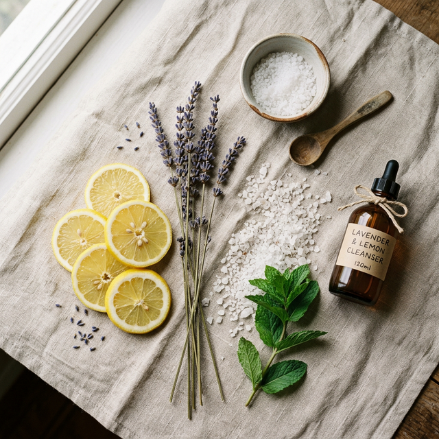

Our Philosophy
Thảnh Thơi Farm không chỉ là mỹ phẩm. Đó là hành trình tìm kiếm sự cân bằng giữa vẻ đẹp hiện đại và sự vỗ về từ thiên nhiên thuần khiết.

Tại Thảnh Thơi Farm, chúng tôi tin rằng thảo mộc là liều thuốc quý giá nhất cho vẻ đẹp bền vững. Mỗi sản phẩm là sự kết giao giữa y lý cổ truyền và công nghệ chiết tách hiện đại.
Chúng tôi bắt đầu từ những cánh đồng hoa cúc tại Bảo Lộc, những rừng bồ kết già tại miền Trung để tìm ra những dưỡng chất tinh túy nhất. Không hóa chất độc hại, không paraben, không thí nghiệm trên động vật.
An Toàn
Tuyệt đối không sử dụng Paraben, Phthalate hay các chất tẩy rửa gốc dầu mỏ.
Bền Vững
Mọi bao bì đều có thể tái chế. Chúng tôi hướng tới mô tả "Zero Waste" vào năm 2030.
Hữu Cơ
Sử dụng nguồn nguyên liệu đạt chuẩn Organic USDA và Ecocert.
Khởi nguồn từ một trang trại thảo mộc tại Bảo Lộc, Thảnh Thơi Farm bắt đầu với những mẻ xà bông thủ công nấu từ dầu dừa và tinh dầu sả chanh.
Đạt được các chứng nhận quốc tế khắt khe như Ecocert và USDA Organic, khẳng định chất lượng Việt Nam.
Trở thành thương hiệu mỹ phẩm thảo mộc hàng đầu với hơn 300 mã sản phẩm, lan tỏa lối sống xanh đến hàng triệu phụ nữ Việt.
Mỗi sản phẩm là một lời cam kết cho sự an tâm bền vững.